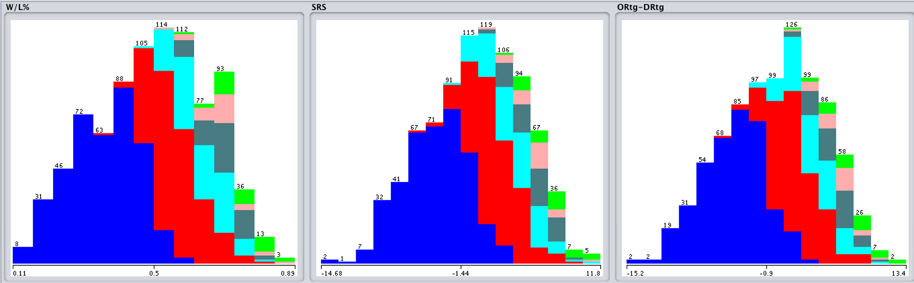

Tommy Praeger, Michael Tamkin, Linqing Zhou, “NBA Playoff Predictions” EECS349. Northwestern University, michaeltamkin2020@u.northwestern.edu. June 2018
The task we opted to try and model was to predict playoff success of NBA teams given data from their regular seasons using teams from 1987-1988 season until present day. With the recent legalization of sports betting, predicting playoff success has never been more important. The results of similar models could also influence team owners to improve their teams’ playoff performance based on the statistics that our models deem more important. We took several approaches toward finding a suitable model, but they all revolved around classifying attributes from NBA teams. Attributes like percentages of two and three point shots made or more advanced statistics like SRS (Simple Rating System) or WS (Win Shares) both aided in the development of our models. In the end, we tested upwards of 42 different attributes on various models like decision trees, logistic regression, and multilayer perceptrons among others to see which contributed to create the most accurate model.
We ended with six different classifications per team depending on if they make the playoffs and if they do, specifically what round they make it to in the playoffs. Our best model used logistic regression on 14 different attributes to reach a classification percentage of 69.92%. This model showed that W/L% (Win percentage), SRS, and ORtg-DRtg (Offensive Rating - Defensive Rating, a statistic we derived) were the most useful in predicting playoff success although there were others that marginally boosted the 10-fold CV testing percentage. Something important to note, although, is that our model only classified teams that made the playoffs into the correct round with an accuracy of 52%. If it predicted a team to win the championship, its accuracy was 55%.
Figure 1: Stacked bar charts of the three most useful attributes. As one can see, these attributes are able to separate teams into the different classification levels

Figure 2: Confusion matrix of our best logistic regression. The model does very well at predicting whether or not teams will make the playoffs. It also does very well at predicting finals winners and first round losers.